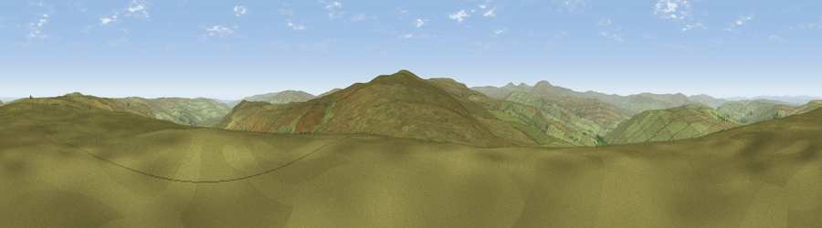

Viewpoint near Nenthead
#7147 in England · top 17% of its area beats it · near NentheadWhere it is
The exact computed spot (NY 79325 40875). Click the marker for map links.
The view, rendered

A 360° render of this exact spot computed from the terrain model, tree cover and land cover — summer colours, afternoon light, calibrated against photographs of famous viewpoints. Real trees, hedges and buildings will differ in detail.
The panorama
Grey silhouette: terrain skyline in each direction (720 bearings, Earth curvature and refraction included). Dashed green: skyline with trees (+15 m) and buildings (+8 m) as obstacles. Blue strip: how far the ground is visible on each bearing.
Where the view opens
Wedge length = distance to the farthest visible ground on that bearing (vegetation-aware). Rings at 10, 25 and 50 km.
What fills the view
99% grassland ·
Angular shares of the visible panorama (visual magnitude), not map area. Landscape diversity 0.03 (0–1 Shannon).
Key numbers
More beautiful places nearby
The staircase of upgrades: each row has a higher view potential than everything closer. Driving times are estimates from straight-line distance, calibrated against real road routing — check an actual route before setting out.
| Place | Direction | Drive | Score |
|---|---|---|---|
| Dead Stones | S · 1 km | ~3 min | 72.8 |
| Viewpoint near Allenheads | NE · 5 km | ~11 min | 74.6 |
| Little Dun Fell | SW · 12 km | ~22 min | 78.4 |
| Cross Fell | WSW · 13 km | ~23 min | 78.7 |
| Viewpoint near Cumrew | WNW · 26 km | ~42 min | 78.8 |
| Barrock Fell | W · 33 km | ~51 min | 81.1 |
| Viewpoint near Watermillock | WSW · 39 km | ~58 min | 82.6 |
| Viewpoint near Watermillock | WSW · 39 km | ~58 min | 83.5 |
54.76238, -2.32282 · source: screening · position refined by local search. Computed location — check access rights before visiting.